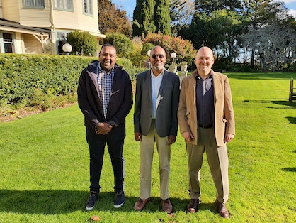
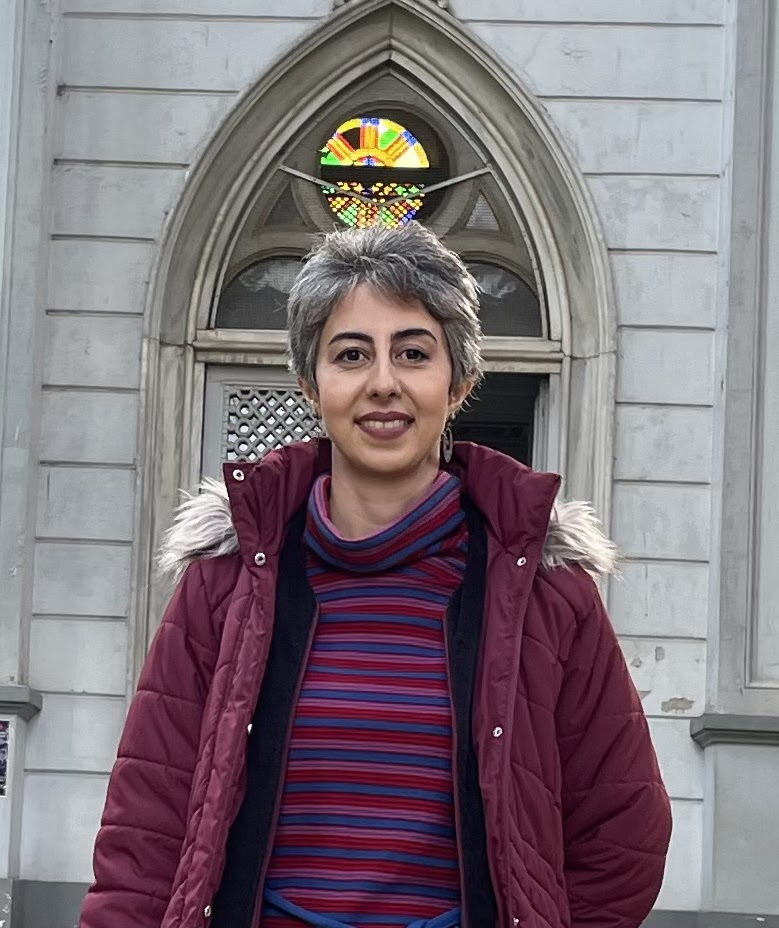
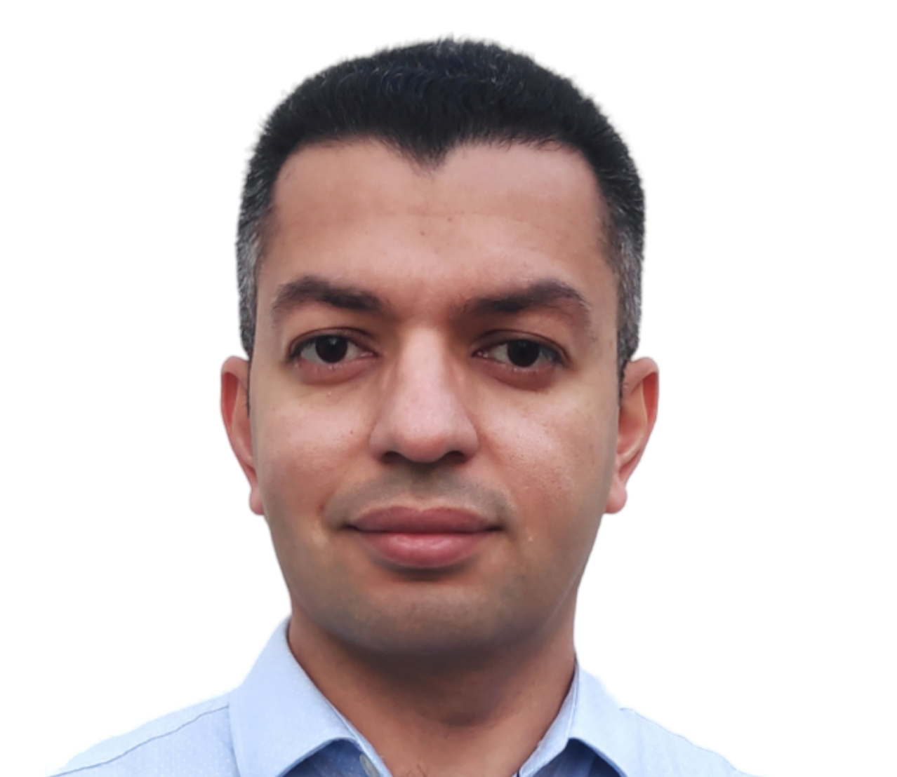

Software Engineering and Analytics Group
Weclome to our research group!
We are the Software Engineering and Analytics Group (SEAG) at Massey University. We coduct research in software testing, maintaince and security.


Weclome to our research group!
We are the Software Engineering and Analytics Group (SEAG) at Massey University. We coduct research in software testing, maintaince and security.


Amjed is undertaking researches in Empirical Software Engineering including: software testing, software maintenance, reengineering and evolution, data analytics (through mining software repertories), and other software quality topics.

Shawn research interests are on programming languages, and using program analysis for software quality and security.

Andie research area focus on ML4SE, LLM4SE, CI/CD, MSR, which applying ML algorithms and LLM for improving the efficiency and effectiveness during the software engineering.
Neagr is a final year PhD student working on detecting flaky tests in JavaScript. Negar is interested in other areas of Software Engineering with a particular focus on software testing, software maintenance, and other software quality topics.

Ruofan is a second year PhD student working on Detecting and Eliminating bugs in AI-generated Code
Ahmed is a first year PhD student working on Vibe Coding - Understanding Practices, Challenges and Risks of AI-Assisted Software Development

Sikai is a first year PhD student working on AI-based Approach to Fix Flaky Tests
This project aims to understand the causes of test flakiness, provide empirical evidence of new patterns of flaky tests and their classifications, and develop a novel technique that is able to identify and predict flaky tests with a high-level of accuracy and scalable to large programs.
This project aims to understand the causes of test flakiness, provide empirical evidence of new patterns of flaky tests and their classifications, and develop a novel technique that is able to identify and predict flaky tests with a high-level of accuracy and scalable to large programs.
This project aims at addressing the following questions: (1) Can we quantify the unsoundness of existing static analyses? (2) Which features in modern programs cause unsoundness, and to what extent? (3) Which methods exist or can be invented to precisely model features causing unsoundness?
This micro-benchmark consists of small Java programs that use certain dynamic language features that are difficult to model by static analysis tools.
@inproceedings{sui2018soundness,
title={On the soundness of call graph construction in the presence of
dynamic language features-a benchmark and tool evaluation},
author={Sui, Li and Dietrich, Jens and Emery, Michael and Rasheed, Shawn and Tahir, Amjed},
booktitle={Asian Symposium on Programming Languages and Systems},
pages={69--88},
year={2018},
organization={Springer}
}
A tool for constructing sound oracle which can be used to asses statically build call graph. It uses Java instrumentation to record method stack at the run time
@inproceedings{sui2020recall,
title={On the recall of static call graph construction in practice},
author={Sui, Li and Dietrich, Jens and Tahir, Amjed and Fourtounis, George},
booktitle={2020 IEEE/ACM 42nd International Conference
on Software Engineering (ICSE)},
pages={1049--1060},
year={2020},
organization={IEEE}
}